Abstract
Backpack is a portable, open-source Backend-as-a-Service (BaaS). By exposing an API for common backend functionality like database persistence and user authentication, Backpack hides the complexities of setting up and managing backend services so that frontend developers can focus on building out web applications.
Backpack spins up an environment that can easily generate any number of isolated backends. It is self-contained, enabling database persistence and storage so that frontend developers retain full control over their application data.
A Backpack deployment consists of one or more Backpacks that each provides basic backend functionality for a web app. To enable each Backpack deployment to support multiple Backpacks, we built the system using a multi-instance architecture enabled by Docker Swarm:
- A Backpack instance within the swarm is packaged as a containerized stack of services.
- A reverse proxy also hosted within the swarm routes requests to specific Backpacks based on human-friendly subdomain names.
An admin panel gives developers control over their Backpacks, allowing them to create new Backpacks with a single mouse click and a name. The system can either be hosted locally as a development sandbox requiring minimal setup and configuration, or it can be deployed to production with a custom domain--the only requirement is Docker. It is ready to scale from a single node to a multi-node server deployment.
We faced a number of challenges developing Backpack, from dynamically generating HTTP routes and models for database collections in the core Backpack API, to designing an infrastructure that can support multiple Backpack instances. In this case study, we will discuss key architectural decisions and how we built Backpack.
What exactly is a Backend-as-a-Service?
Web applications are made up of two parts: a frontend and a backend. The frontend of the application is typically concerned with how a website or mobile application looks and how users interact with it. In contrast, a backend manages data and handles business logic: it provides the information and functionality that underpins the user's frontend experience.
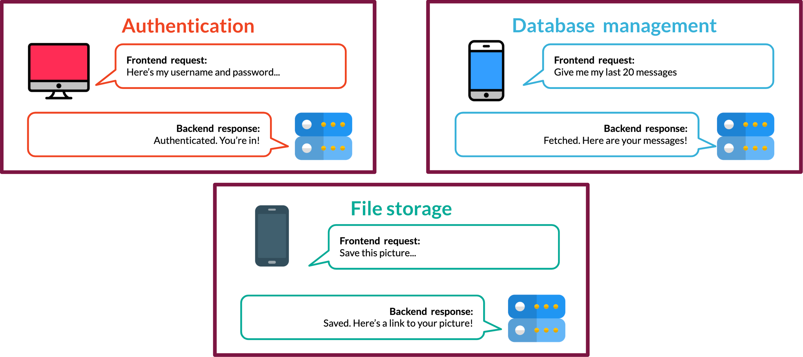
There are a host of tasks that comprise backend functionality, including user authentication, data persistence, request routing, and file storage. Additionally, applications may require support for realtime communication. Finally, after a backend is built, deployment brings its own challenges such as server configuration, SSL certificates, and frontend hosting.
Each of these tasks requires specialized knowledge and a considerable amount of time generating boilerplate code and ensuring that each of these features is integrated smoothly. A Backend-as-a-Service (BaaS) makes these tasks easier by providing an API that reduces the complexity of backend functionality for frontend developers.
The basic structure of a BaaS is a backend application that exposes API endpoints to create and access data, store and retrieve files, authenticate users, and handle other backend functions. Frontend developers integrate these services into their web applications by making calls to the API.
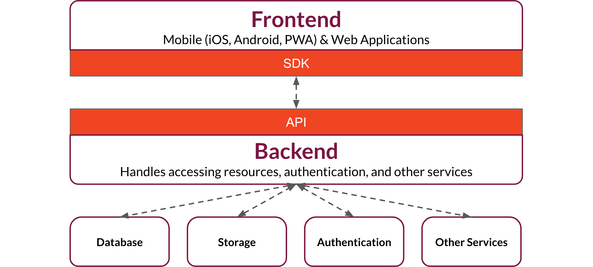
To facilitate interaction with the API, a BaaS typically provides a Software Development Kit (SDK).
By providing this functionality, a BaaS handles a significant portion of a web app's overall architecture. This is one of the primary differentiators between BaaS and other cloud services such as Infrastructure-as-a-Service (IaaS), Platform-as-a-Service (PaaS), and Function-as-a-Service (FaaS): in addition to infrastructure, a BaaS supplies application code. So where does a BaaS fit in this ecosystem?
In terms of convenience for developers, Infrastructure-as-a-Service is a step above a bare-metal deployment. IaaS provides infrastructure resources such as virtual machines, storage volumes, and networking, and may handle scaling and other management tasks. The developer is responsible for provisioning and managing their own operating systems and applications. Platform-as-a-Service providers such as Heroku extend IaaS by managing operating systems, data tools, and app deployment, but leave application code up to the developer.
Backend-as-a-Service, in contrast, provides all or most of the services offered by IaaS and PaaS, but in addition, handles backend functionality as described above, so that a developer's main responsibility is frontend code.
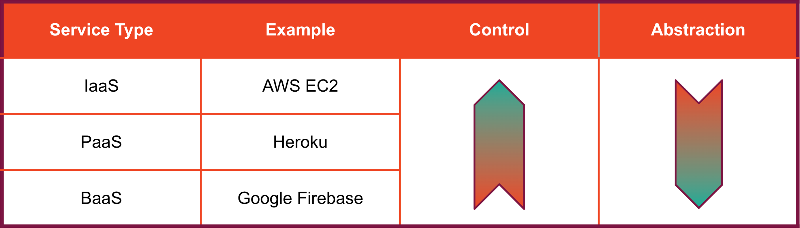
With all of these services, there are trade-offs between convenience and control. Compared to the other services mentioned above, a BaaS handles more of an application's core functionality and therefore gives developers less control. Relying on a hosted BaaS means that a developer's data lives on infrastructure that is owned and controlled by the service provider. Even if developers can access and interact with the data generated by their applications, this question of ownership and control over data is worth considering, especially for developers concerned about privacy. Furthermore, relying on a hosted BaaS exposes a developer to the risk of vendor lock-in if their application outgrows the BaaS. These closed-source systems are not customizable beyond the built-in features offered by the provider. If a vendor drops support for features, makes changes that break existing applications, raises the cost of their services, or closes their service altogether, a developer may find it difficult to move their applications to a different platform.
We attempted to address these concerns with Backpack, an open-source, self-hosted BaaS. While a self-hosted BaaS leaves more responsibility for developers, it also gives them more autonomy and ownership over their applications and data. Because Backpack is self-hosted, application data stored in Backpack is owned and controlled by the developer, not a cloud provider. Backpack is customizable, free from vendor lock-in, and can be spun up and scaled out on any hosts running Docker.
We built Backpack for development teams looking to provide a simple, functional backend sandbox for frontend developers while minimizing the set-up and configuration the software engineering team has to do. Backpack requires a little more admin work than Google's Firebase or Amazon's Amplify (currently the two most popular BaaS offerings), but with the benefit of privacy and flexibility.
Backpack Core App
We set out to build a self-hosted BaaS with the following characteristics:
- Provides essential backend functionality to support real-time frontend applications, including hosting
- Is easy to install, deploy, and administer
- Can support multiple backends on a single deployment
In the following sections, we will explore how we built a system with these characteristics, beginning with the core Backpack application and tracing the expansion of the system from a single app to a containerized, scalable, multi-instance system.
Building a generic backend: the Backpack core app
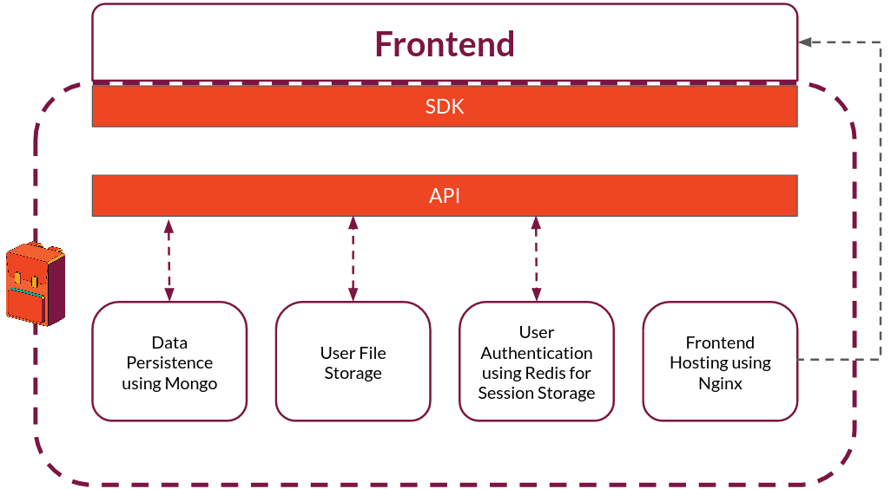
At the core of Backpack's infrastructure is the Backpack API. Built with JavaScript using Express, it is a generic backend that can be adapted to fit a frontend developer's needs. How do you create a generic backend? When building the core Backpack API, we needed to figure out how to provide basic backend functionality without knowing exactly how it would be used, what kind of data and file storage would be needed, or what kind of communication protocol would be required. In this section, we explain how Backpack handles this challenge.
Software Development Kit (SDK)
To make it easy for frontend developers to integrate Backpack into their web applications, we built the Backpack SDK, a JavaScript library with convenience methods for interacting with Backpack's API.
Configuring the SDK
Link to the relevant script files in your HTML files
<script src="https://admin.yourBackpack.com/sdk.js"></script>
Call the createSdk method from your JavaScript code with the Backpack's unique URL and API key.
const bkpk = createSdk('https://mySweetApp.myDomain.com/', 'aLong&RandomApiKey');
The object returned by createSdk exposes Backpack's functionality through modules that each represent a core Backpack component: collection management, data persistence, user authentication, file storage, and realtime communication over websockets.
Collection Management & Data Persistence: the
db module
Building basic features like data persistence presents some extra challenges in a BaaS. Not knowing ahead of time what kind of data will need to be stored means that flexibility is essential, so we chose to use a document database, MongoDB, as Backpack's data store instead of a relational database. This choice places the burden of maintaining data integrity on the frontend developer, but also minimizes the constraints we place on them.
One of the main challenges regarding data persistence in Backpack is that we could not hardcode routes and database models. Instead, we needed to be able to dynamically generate both HTTP routes and database models based on the collections a frontend developer created for their web app.
When Backpack starts up, it automatically generates HTTP routes for all the collections in its database. As new collections are created, their full set of REST API endpoints are dynamically added to the existing routes so Backpack can handle requests for the new collections without requiring the entire application to restart to pick up the new routes.
By calling bkpk.db.createNewCollection(collectionName) with a string
representing a collection's name, developers can create a new collection that they can subsequently interact
with through the SDK's other db methods:
| Method | Description |
|---|---|
bkpk.db.getCollection(collection) |
returns a JSON object representing every database record in a collection as an array. |
bkpk.db.getResource(collection, id) |
returns a JSON object representing the database record with the given id in the given collection. |
bkpk.db.createResource(collection, data) |
creates a new database record in the given collection with the
properties represented by data. Returns a JSON object representing the
created database object. |
bkpk.db.updateResource(collection, id, data) |
updates the database record identified by collection and id with
the properties provided by data. Returns the updated database record.
|
bkpk.db.overwriteResource(collection, id, data) |
overwrites the database record identified by collection and id with the properties provided by data.
Returns
the updated database record. |
bkpk.db.deleteResource(collection, id) |
deletes the database record with the given id in the given collection.
Returns the deleted database record. |
These methods correspond to the following REST API endpoints exposed by Backpack, using 'cars' as an example collection:
| HTTP Verb | URL Path | SDK Method |
|---|---|---|
| GET | /cars | db.getCollection |
| GET | /cars/:id | db.getResource |
| POST | /cars | db.createResource |
| PUT | /cars/:id | db.updateResource |
| PATCH | /cars/:id | db.overwriteResource |
| DELETE | /cars/:id | db.deleteResource |
By default, Backpack's API endpoints can only be accessed by users authenticated through the SDK's authentication module, detailed in the next section.
User Authentication: the auth module
Backpack provides built-in authentication. Session tokens for users are stored in cookies and tracked using Redis. The auth module exposes methods that allow developers to build workflows that enable users to register, login, or logout from their applications:
| Method | Description |
|---|---|
bkpk.auth.register(email, password) |
creates a new user with the given email and password in the
application's Backpack. Returns the new user's database id if successful, validation errors if not.
|
bkpk.auth.login(email, password) |
creates a session for the user if given a valid email and password. A
session token is passed back to the frontend via a secure, HttpOnly cookie which will be sent on
subsequent
requests to the Backpack. |
bkpk.auth.logout() |
destroys the user's session, effectively signing the user out of the web application. |
When deployed with a custom domain, Backpack automatically requests SSL certificates from Let's Encrypt to encrypt traffic using HTTPS.
File Storage: the storage module
Backpack provides local file storage for user content. We chose local storage for several reasons. First, one of our goals is to be self-contained, so we wanted to avoid using cloud storage. We also wanted to reduce dependencies and keep MongoDB focused on the single task of managing collection data, not serving files. This allows independent scaling of services and simplifies the process of viewing and receiving files. Docker makes it easy to persist data using volumes.
| Method | Description |
|---|---|
bkpk.storage.getFile(userId, filename) |
returns file from
current_user_id/filename in the body of the
response. |
bkpk.storage.getListOfUserFiles(userId) |
returns a JSON object containing an array of metadata records for the files associated with a user. |
bkpk.storage.uploadFile(fileFromFormData, filename, bucket) |
saves the file in the file system and a record of associated user data in the database. Returns a JSON object containing metadata if successful, validation errors if not. |
bkpk.storage.updateFile(currentFilename, newFilename, bucket) |
overwrites file metadata. Returns a JSON object containing metadata if successful, validation errors if not. |
bkpk.storage.overwriteFile(fileFromFormData, filename)
|
replaces file
currently saved under
current_user/filename with fileFromFormData. Metadata will
not
be updated. Returns a success message if
successful, validation error if not. |
bkpk.storage.deleteFile(filename) |
deletes file under
current_user/filename. Returns metadata and a success
message if successful, validation errors if not. |
Realtime Communication with Websockets: the ws module
Implementing websockets in a custom backend requires handling quite a bit of complexity. Because websockets are an alternate communication protocol to HTTP, many of the same issues that would normally be handled by HTTP requests and responses have to be addressed. In addition, the developer needs to create a websocket server, handle authentication on the initial GET request to upgrade to a websocket connection, manage channels, and handle message broadcasting. On the frontend, a developer needs to deal with establishing and maintaining the websocket connection, handling failures, and creating websocket messages. Backpack provides a layer of abstraction over much of this complexity, with convenience methods for handling most websocket functions.
To create a websocket connection, call the ws method:
const ws = backpack.ws();
Backpack websocket messages always include an action property that tells the server how to process
the message.
Once the message is processed, the server sends a message to the client with the same action property value
along with additional information corresponding to the action. It is also possible to create messages with
custom actions that can be processed client-side.
Database Interactions
| Method | Description |
|---|---|
ws.actions.findResource(collection, query) |
returns a JSON object containing an action property that
is set to 'find' and a response property that is set to an array of
database records that match the query.
|
ws.actions.getCollection(collection) |
returns a JSON object containing an array of database records
for the collection with an action property that is set to 'getAll' and a
collection property that is set to the collection name.
|
ws.actions.getResource(collection, id) |
returns a JSON object containing a database record with an
action property that is set to 'getOne'.
|
ws.actions.createResource(collection, data) |
returns a JSON object containing the new database record
with an action property that is set to 'create'.
|
ws.actions.overwriteResource(collection, id, data) |
overwrites the existing record with the key-value pairs in data.
Key-value pairs not included in data will be lost. Returns a
JSON object containing the overwritten database record with an action
property that is
set to 'update'.
|
ws.actions.updateResource(collection, id, data) |
updates an existing record by modifying existing fields and/or adding new ones. Existing key-value pairs
not
included in data
will remain in the document. Returns a JSON object containing the updated database record with an action property that is set to
'patch'. |
ws.actions.deleteResource(collection, id) |
returns a JSON object containing the deleted database
record with an action property that is set to 'delete'. |
Websocket Channels
| Method | Description |
|---|---|
ws.actions.joinUsersChannels(usersInformationCollection) |
returns a list of channels the user is subscribed to. |
ws.actions.createChannel(usersInformationCollection, channelType, name)
|
creates a new channel document and updates the currentChannel and channels fields in the user's 'usersInformationCollection' document.
It also broadcasts the new channel to all active websocket connections.
|
ws.actions.joinChannel(usersInformationCollection, channelType, channelId)
|
subscribes a user to the
channel referenced by channelType and channelId and updates the currentChannel and
channels
fields in the user's 'usersInformationCollection' document.
|
ws.actions.leaveChannel(usersInformationCollection, channelType, channelId)
|
unsubscribes a user from the channel referenced by channelType and
channelId and updates the currentChannel
and
channels
fields in the user's 'usersInformationCollection' document. |
ws.actions.changeChannel(usersInformationCollection, channelType, channelId)
|
changes the user's current channel to the channel referenced by channelType and channelId by updating the
currentChannel field in the user's 'usersInformationCollection' document.
|
ws.actions.deleteChannel(usersInformationCollection, channelMessagesCollection, channelType,
channelId) |
deletes the channel referenced by channelType and channelId along with all the messages associated with it. The currentChannel and channels fields are then
updated in the 'usersInformationCollection' document for each user that is subscribed to the channel.
|
Websocket & HTTP Responses
When HTTP requests are made by calling certain methods on the db object of the SDK (createResource(),
updateResource(), overwriteResource(), and
deleteResource()), the response from the database interaction is
broadcast to active websocket connections.
If the response contains a valid channelType and channelId property, the message is only broadcast to active
websocket connections who are subscribed to that channel.
If the response does not contain a channelType and channelId property, the message is broadcast to all active
websocket connections.
The response will not be broadcast to any websocket connections if the document includes a property called
broadcast set to false.
Hosting a Web Application with Backpack
The final step in the development of a web app is deploying it for hosting on the internet. Since the backend functionality of the web apps using Backpack is being handled via API calls, the frontend can easily be built as a static site that simply makes calls to the Backpack API to provide its core functionality.
When a frontend developer spins up a Backpack using the Backpack admin panel, they give it a name, like 'my-app'. This name will be the subdomain where their backend will be hosted. For example, if the Backpack system is hosted at bkpk.dev, the particular Backpack instance URL will be served over HTTPS at my-app-be.bkpk.dev where the '-be' in the URL represents 'backend'.
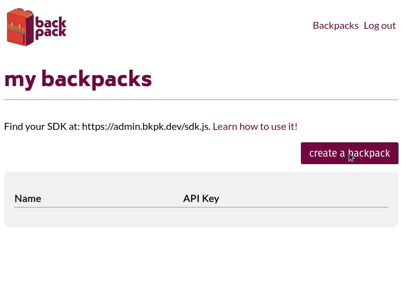Developers can view and manage collection data and users in the admin panel for each backpack:
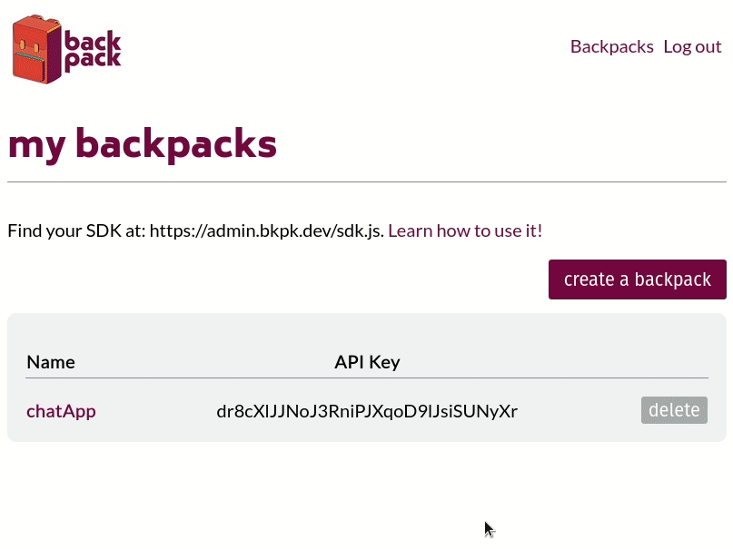Once the developer has finished working on the frontend of their website, they can upload it as a zipped file through their Backpack's admin panel to deploy it. The admin panel will extract their site's files, push them to the Nginx web server, and serve the website from my-app.bkpk.dev, also over HTTPS. This process takes less than a minute.
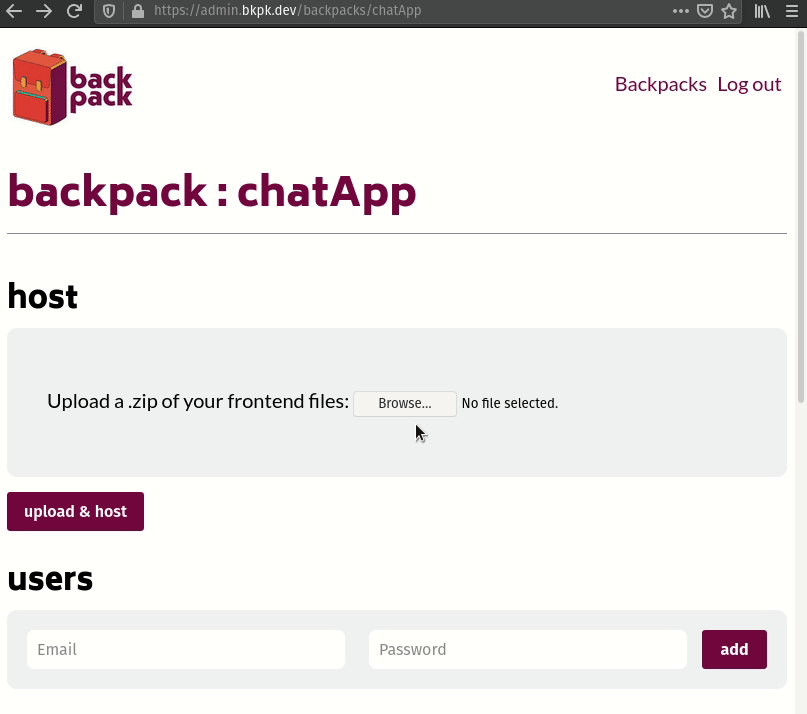Multiple backpacks can be hosted in the same deployment.
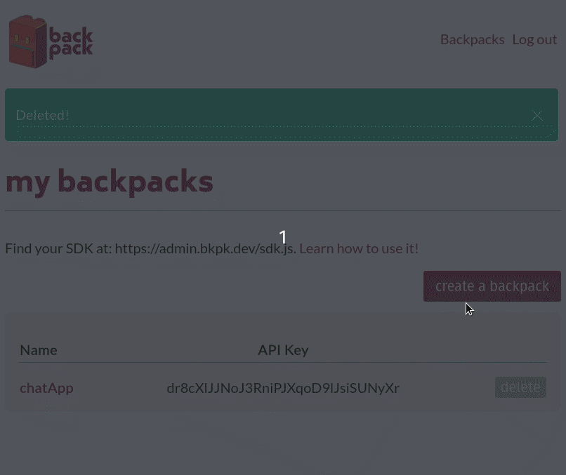In the remaining sections, we explain how we packaged our core API with its dependencies on our way to building a multi-instance infrastructure that supports multiple backends on a single Backpack deployment. We outline the challenges we faced in moving from our original single-instance architecture to the full-featured system we showcased above.
Packaging Backpack: Single-Instance Architecture
Our first step toward the multi-instance architecture of our current system was to figure out how to package the Express API and deploy it as a single-instance Backpack providing backend functionality for one application. One of our main goals was to make deployment quick and simple. We didn't want to require a frontend developer to install dependencies such as Node (for the Express API), Mongo (for database persistence), Redis (for user sessions), Nginx (for frontend hosting), and have to handle version incompatibilities and other configuration headaches. That’s why we chose to containerize all of the components that make up a single Backpack instance.
What are containers?
Containers are a way to package applications with their dependencies in a consistent runtime environment that is independent of and isolated from the host machine running the container. Containers are a lightweight alternative to virtual machines. Because they share the host's operating system, they are faster to spin up and require fewer system resources to run. Spin-up speed is critical for Backpack since entire application stacks need to be created on the fly.
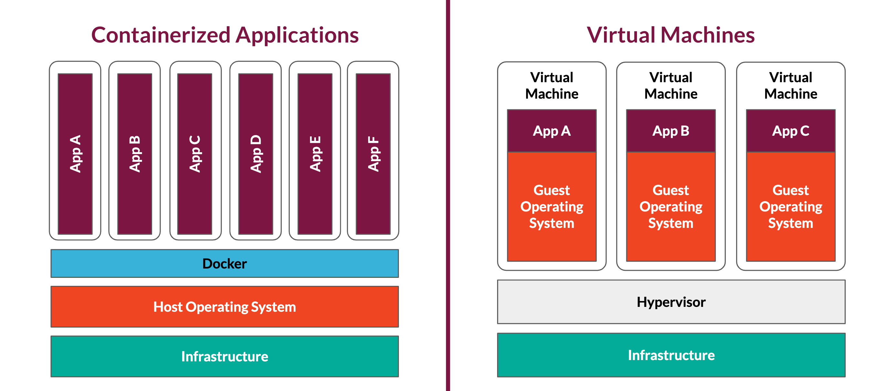
Once Docker is installed on a machine, the Docker Daemon can be used to run Docker containers on it. The Docker Daemon spins up and tears down containers using Docker images that specify how the containers should be built and which processes should run within them.
Docker containers are intended to handle one process per container. Backpack requires a minimum of four processes which will run across four separate containers: one for the core Backpack app itself, another for the Mongo database, a third for the Redis database, and a fourth for the Nginx web server.
To make it easier to work with these four separate containers as one coordinated system, we took advantage of Docker's Compose file specification. Using a Compose file, we can define services that specify how containers should run and interact with other containers. Within the Compose file, we assign each service a name, specify which Docker image it should run, and join it to a Docker-specific bridge network that allows the service to communicate with other services on that same network using the names assigned to them in the Compose file.
This bridge network is private by default. In order to enable communication from outside of the network, the developer must explicitly specify which container port to expose and how that port should be mapped to the host machine's ports. In this first iteration, we used the Docker Compose file to map a port from the Express API container to a port on the host machine. This enabled our app to listen for requests from the host machine.
Finally, to run our custom Express API as a container, we built a custom Docker image to run our application on top of a NodeJS image.
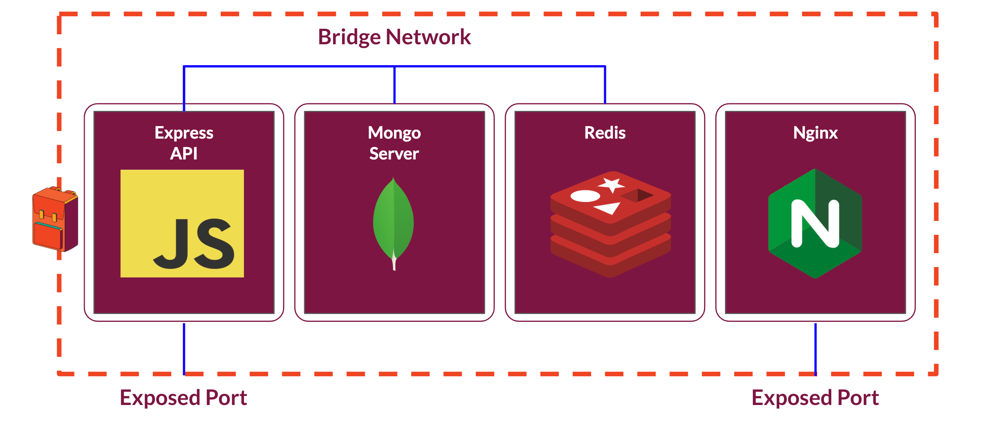
Containerizing Backpack in this way dramatically simplifies the work required to deploy Backpack by eliminating the need to manually set up and install the ecosystem Backpack depends on. By running the entire application through Docker, we can guarantee a consistent environment and runtime for each component of our system, regardless of where Backpack is spun up.
Supporting Multiple Backpacks: Multi-Instance Architecture
At this point, we had a system that was easy to deploy and supported one Backpack instance, ideal for local development. But if we wanted to create a production system that could support more than one backend on the same server, we would have to edit the Compose file significantly each time a Backpack was deployed to avoid conflicts with ports, naming, and networks--this wouldn't be easy to manage and significantly reduces the usefulness of Backpack. Our question then became how to support easy deployment of multiple Backpacks within one Backpack system. We considered two options for expanding our architecture: a multi-tenant infrastructure and a multi-instance infrastructure.
Multi-tenant vs. multi-instance
The Multi-Tenant Architecture
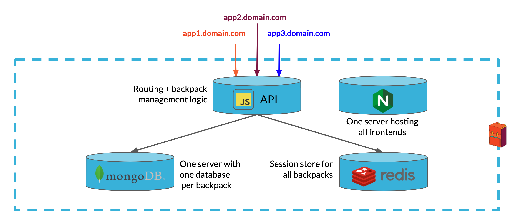In the multi-tenant architecture, a single Backpack instance would become the backend for multiple web applications. A single Express API would handle requests from frontends of each web app, routing them to a single MongoDB server which would persist data for each web application in a separate database within the same cluster. A single Redis instance would store session data for each web app's users. Finally, a single Nginx server would host each web app's frontend from a separate directory.
Because the Express API is stateless, we can scale it horizontally if we need to support a growing load of requests. Mongo also supports horizontal scaling either by replication or sharding.
There are a number of challenges associated with this approach. The first two challenges have to do with routing and Backpack administration:
- With one Express API server handling backend functionality for all web apps supported by the system, we would need to build routing logic based on URLs or API keys into the Express server to figure out which backend tenant should handle each request.
- In order to manage backend functionality for the different applications using the system, we also need to provide some way for frontend developers to add new applications and remove ones they are no longer using. We also need to give them access to their application data. If we don't add additional components to the system, all of this would need to be built into the single Express API.
The next set of challenges arise from the lack of isolation between applications using the multi-tenant model:
- If one tenant receives heavy traffic or puts a heavy load on the database, it could lead to problems with resource contention. This could be solved by horizontally scaling either the API or the database server.
- Storing data for multiple applications in the same environment creates a significant security vulnerability.
The Multi-Instance Architecture

In contrast, a multi-instance architecture would maximize isolation between applications while separating routing and administration logic from the core Backpack API into dedicated components. The backend for each application would be a self-contained environment comprised of the Express API, MongoDB, Redis, and Nginx, just like our single-instance deployment.
While this architecture addresses the challenges introduced by the multi-tenant architecture, it introduces a few of its own:
- The components of each Backpack instance must be spun up and torn down dynamically. This will require an admin panel to manage Backpack instances.
- Because multiple Backpacks will live on the same system, we will need to introduce a reverse proxy that can communicate with each Backpack's API and Nginx servers to route requests to the correct backend.
Each of these architectures has its strengths and weaknesses. The multi-tenant architecture keeps networking and container orchestration very simple, but complicates our application logic, introduces some security concerns, and could lead to performance issues. In contrast, the multi-instance architecture keeps our application logic focused on a single backend, offers isolation from other applications, makes horizontal scaling across nodes extremely simple, and separates logic for routing and managing Backpack instances to specialized services. Those benefits come at the cost of much more complicated networking and container orchestration.
We felt that the costs involved with building a multi-instance system were well worth the benefits, especially if we built networking and container orchestration tools into Backpack.
Building the multi-instance architecture
After deciding on an architecture, we needed to figure out how to take the system from a single-instance Backpack on a single server to a scalable, multi-instance, multi-node system.
In our single-instance Backpack deployment, all four containerized components lived on a single server. The API, Mongo, and Redis databases were connected to each other through a bridge network. A fourth container running Nginx was part of the deployment, but was not connected to the bridge network since it did not need to communicate directly with the other components in the deployment. The API and Nginx servers both exposed ports to listen to requests.
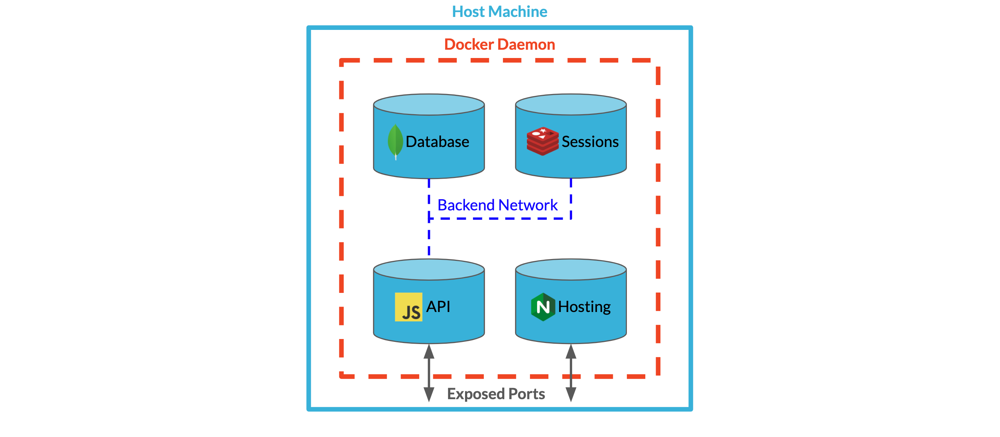
In order to implement a multi-instance architecture that could support multiple Backpacks in a single deployment, we needed to group our single-instance components into a logical unit, a stack of containerized services, that we could dynamically spin up or tear down.
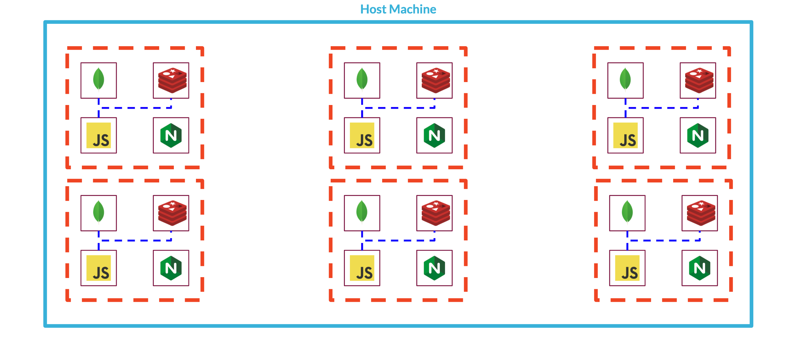
Figuring out how to deploy multiple Backpacks to a single server introduced two new challenges:
- With multiple Backpacks running on one system, how could we route the requests hitting the system to the appropriate Backpack instance?
- A single server can only support so many processes before performance begins degrading or the entire system crashes. How can we design our system to continue performing reliably as it supports more Backpacks and heavier loads?
To address this scaling issue, we could upgrade the server, but scaling up in this manner quickly becomes expensive. Scaling out across multiple servers could solve this problem, but would introduce additional complexity to our system's communication and routing needs as individual Backpack stacks could now live on any host machine within a deployment.
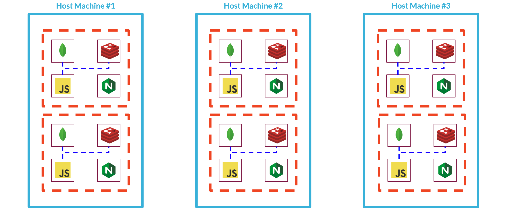
Finally, if we're already going to scale out a Backpack deployment across multiple servers and deal with the networking challenges that that introduces, can we take our system a step further by deploying an individual Backpack stack across these servers? This would give us maximum flexibility with how to deploy individual services. Perhaps we need beefier servers to handle database persistence and would like all of our Mongo services to run from that server, moving the Nginx services to a less robust machine.
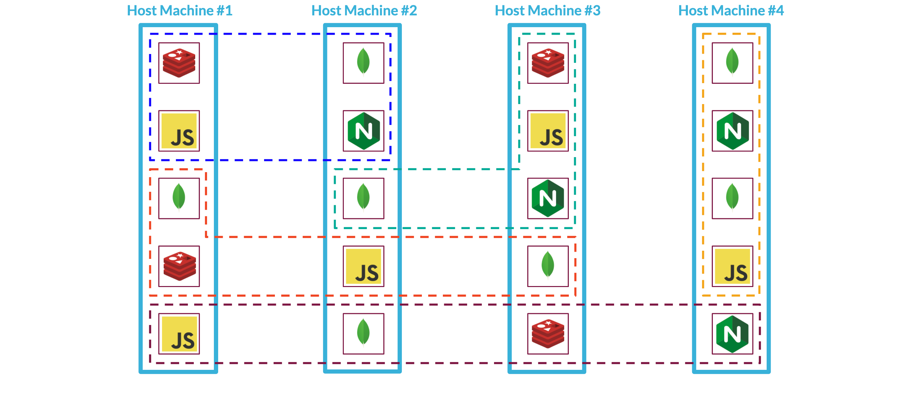
To accomplish this, there are quite a few things we need to do:
- ☐ Spin up / tear down backpack stacks
- ☐ Spin up / tear down backpack stacks across servers
- ☐ Manage communication within stacks across servers
- ☐ Route requests from the internet to the right backpack
- ☐ Make it easy to spin up / tear down backpack stacks
- ☐ Manage backpack users & data from a centralized admin panel
Stack Management
Luckily, there are tools for managing containerized systems that will make these tasks manageable.
Container orchestrators are tools to 'manage, scale, and maintain containerized applications' and the networks they use to communicate. Docker Swarm and Kubernetes are two of the most popular container orchestrators. We chose to use Docker Swarm because it is a part of Docker, which eliminates an extra dependency for our system. It is also simpler to use than Kubernetes while still providing the functionality we need to accomplish all of the to-dos we have set ourselves.
So what exactly is a 'containerized application'? In Swarm terminology, we can think of a containerized application as a stack of coordinated services. A stack file is a special version of the Compose file we used earlier to create the single-instance Backpack. Stack files let us define how we want services to be deployed: how many replicas of a service to run, which networks a service should be a part of, and the name that other services will use to locate it on the network.
Docker provides a Command Line Interface (CLI) to manage containers and swarms. Passing the stack file as an argument to Docker's CLI commands allows us to spin up, tear down, and manage Backpack stacks.
- ☑ Spin up / tear down backpack stacks
Docker Swarm is designed to manage services running on multiple nodes, which is just what we need to scale our system. A node in Swarm terminology is a machine running Docker that is a member of the swarm. Nodes can be managers or workers.
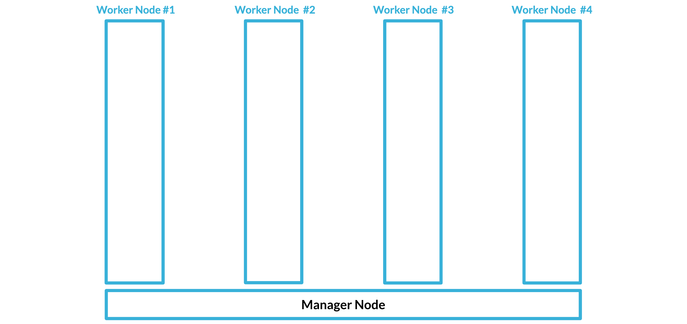
When you configure a swarm, you specify its desired state--for each service, how many replicas or running tasks it requires, the ports it exposes, and the networks it belongs to. A task is a containerized process that instantiates a service. It is a manager node's job to maintain the system in the desired state by assigning tasks to worker nodes. Because Swarm figures out how to distribute services across worker nodes, scaling an application is relatively easy. Here we can see one Backpack stack that has been spread out across four worker nodes:
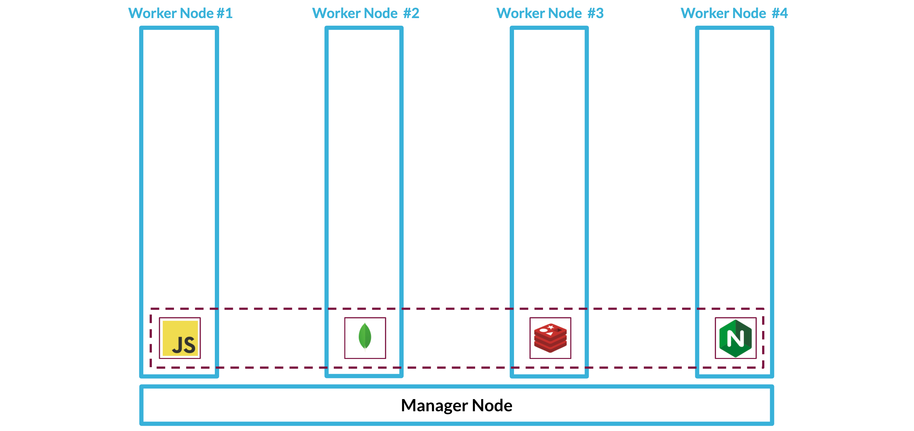
If some of our services are deployed on different nodes, as in the diagram above, how will they be able to communicate with each other? Swarm provides us with overlay networks that can span across nodes. Each service is given a unique name so that it can be located by other services in the swarm.
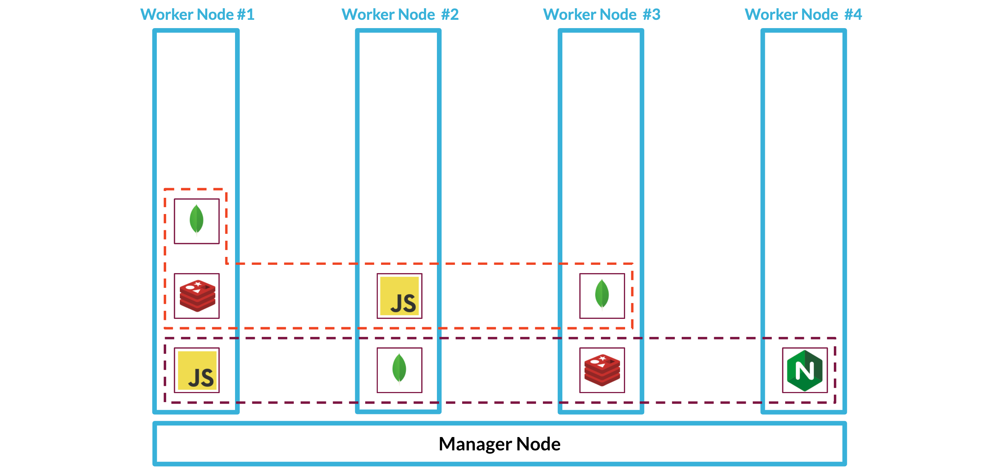
As we add more Backpacks to our system, Swarm will continue figuring out how to deploy each Backpack's services across the nodes and take care of the networking within Backpack stacks using overlay networks.
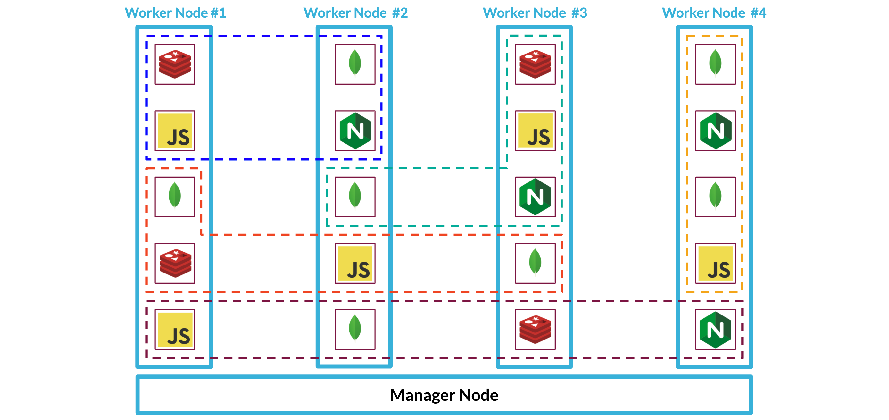
By choosing the right tool, Docker Swarm, we can check off our next two to dos.
- ☑ Spin up / tear down backpack stacks across servers
- ☑ Manage communication within stacks across servers
We now have multiple Backpacks living on multiple nodes, with overlay networks for handling communication between their services.
Routing
Our next task is to route requests from outside the swarm to the correct Backpack. While we can use overlay networks for intra-swarm communication, we have not yet solved the problem of how to handle routing for requests from outside the system. Swarm provides something called an ingress routing mesh to route requests from outside the swarm to the appropriate service within the swarm. When a service within the swarm publishes a port, that port gets published through the routing mesh so that any node that receives that request can pass it off to the Swarm to handle appropriately.
This works well for a situation in which each service exposes a port with a unique number, as would be the case, for example, with a single-instance Backpack deployment. If we specify that our Express API should listen for requests on port 3000, and our Nginx server should listen on port 3001, the ingress routing mesh will ensure that requests to those ports on any node are forwarded to the appropriate service.

However, once we have multiple Backpack instances, routing becomes more complicated. The ports each container should expose are specified in the Stack file that we use to spin up each Backpack instance. But because each instance is configured by the same stack file, all Backpacks would expose the same port number. Two services can't expose the same port through the ingress routing mesh: it would have no way to distinguish which service a particular request should be routed to. So how can we have all Backpack instances run on the same system and listen for requests if they all publish the same ports through the routing mesh?
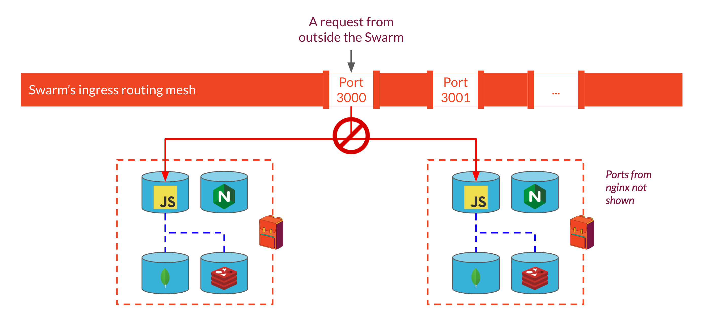
A common solution to this problem is to use a reverse proxy that can receive requests from outside the swarm and route the requests to the appropriate service within the swarm using configuration rules. By running the proxy as another service within the swarm on the same overlay network as each Backpack's Express API & Nginx servers, we can stop exposing individual Backpack ports through swarm's ingress routing mesh which would solve our port conflict issue. Because each Backpack stack is assigned a unique name when it's spun up, we can incorporate that name into the reverse proxy's routing rules, telling it to look for that name in the URL of incoming requests to route requests to the right place.
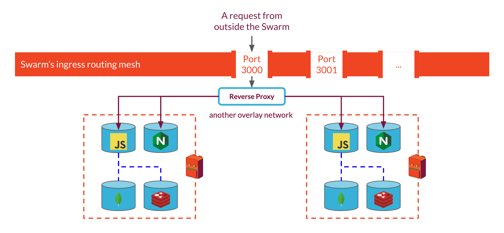
However, we have not solved all of our routing problems yet. One of the key requirements of our system is that it is easy to spin up and tear down Backpacks. This means that we need to be able to inform our reverse proxy about changes in the swarm. If we use Nginx or HAProxy as our reverse proxies, we'll need some way to dynamically modify their configurations when a Backpack is added or removed. Often, updating a configuration will require the reverse proxy to restart for the changes to take effect, which creates downtime for the system. One solution for this problem would be to replicate the reverse proxy and stagger updates, but we would prefer to avoid these complications if possible.
We chose to use Traefik, a reverse proxy built for use with containerized applications. Traefik is deployed as another service within our swarm and configured to communicate with the swarm manager for updates on the state of the swarm. Based on the information it receives from the swarm manager, Traefik reconfigures itself to route requests to new stacks or stop serving requests from stacks that are torn down.
Traefik uses routing rules to determine how to route a request to a service. When a user assigns a name to a Backpack stack, swarm will use that name to uniquely identify both the stack and its services. We can take advantage of this consistent naming scheme to set up Traefik's routing rules: each Backpack will be given a subdomain name matching its stack name. When Traefik receives a request for that subdomain, it will route that request to the Backpack stack whose name matches the subdomain in the request.
SSL Certification
Traefik provides an additional benefit as well. Because we are handling requests involving passwords and possibly other sensitive information, requests and responses should be encrypted by using HTTPS. To do that we need an SSL certificate associated with the hostname of each Backpack, but as we are generating our hostnames dynamically, this becomes a little tricky. Traefik handles this by requesting SSL certificates for subdomains automatically from Let's Encrypt. This creates a slight delay when we spin up a new Backpack (less than a minute), but is a worthwhile trade-off for ensuring that communication with Backpack is encrypted.
Adding a Traefik reverse proxy allows us to check routing off our list, which leaves us with the task of handling system administration and swarm management.
- ☑ Route requests from the internet to the right backpack
Admin Panel
When we chose a multi-instance architecture, we prioritized isolation between Backpacks and the separation of routing and administration logic from core backend functionality. This came at the cost of additional application layers for container orchestration and routing. In addition, by achieving a high degree of isolation between Backpacks, we decentralized data persistence, making it more difficult for a frontend developer to manage data for multiple applications.
In the previous section, we described how we added a reverse proxy to handle routing challenges. For the remaining issues--container orchestration and centralized management of individual Backpack data--we built a custom admin panel.
Stack Management
Using a container orchestrator like Docker Swarm made it relatively easy to spin up or tear down stacks of services and the networks that join them. By passing the stack file that describes the containerized Backpack instance as an argument to Docker's CLI commands, we were able to spin up new stacks on demand or tear down existing ones. However, this was not the kind of interface we could expose to the frontend developers using our system: it requires root access to the manager nodes running Backpack. If multiple frontend developers are sharing a single Backpack deployment, this either creates a huge security concern if they are all given access, or it causes a major inconvenience for whoever is administering the system. Furthermore, we did not feel like our users should need to know anything about how to run Docker commands in order to use our system.
Our first step was to build an admin panel that could register and authenticate frontend developers using our system. They would be the only ones authorized to access any of this stack management functionality. Once signed in, the frontend developers are presented with a UI that lets them spin up a new Backpack stack by assigning it a name and clicking 'submit.' The backend of the admin panel receives the request to spin up a new Backpack and runs the relevant CLI commands. The standard output and error streams from the CLI are piped back to the admin panel to confirm that the entire stack is spinning up correctly.
Backpack stacks can also be torn down with a click of a button using a similar process.
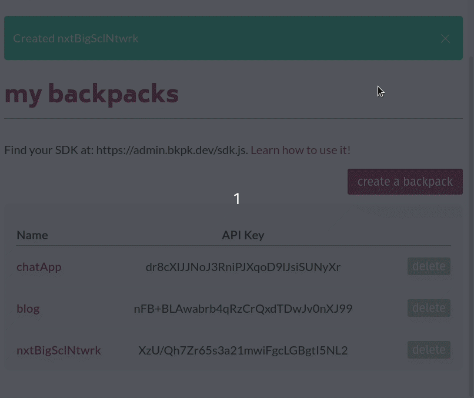We built the admin panel as another containerized application running in the swarm. We relied on Redis again to provide session storage, Express as a framework to build the backend, and Nginx to serve the frontend of the application. A container running Postgres provides the data persistence we need to manage user accounts for frontend developers and the Backpacks they created. We chose not to use Mongo for this portion of our system because we had well-defined schemas for and relationships between each entity we wanted to store in the database.
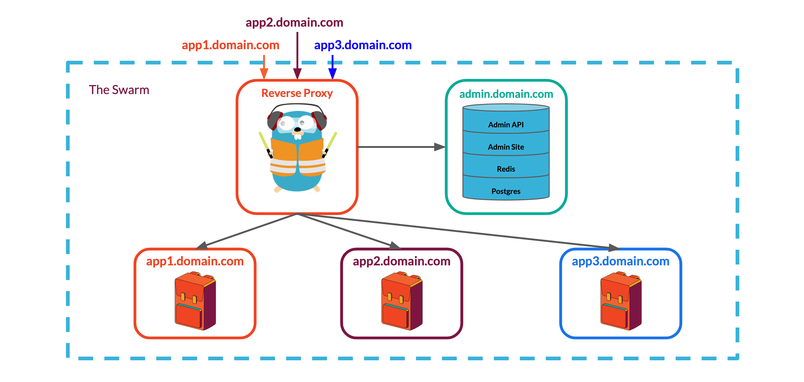
Data Management
Our final challenge was giving frontend developers a convenient way to interact with collection and user data for their applications. Since each Backpack was designed as a generic backend, we already exposed the functionality needed to interact with arbitrary collection data. We also provided API endpoints for registering users. However, for security reasons, we did not expose endpoints for viewing all the users registered with a specific Backpack or for deleting users. As essential administrative features, we needed to find a way to expose this functionality to developers without compromising the security of our system.
One solution would be to simply add this user management functionality to the Backpack API and create some notion of roles to authenticate developers versus normal users of their applications. After authenticating as a developer, these user management endpoints could be reached like any other API endpoint. However, we wanted to avoid exposing these vulnerable endpoints to the internet, so we explored some other options.
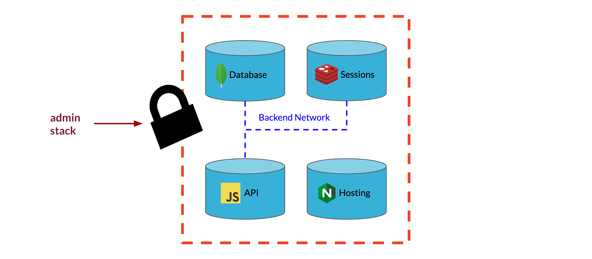
Another solution would be to connect the admin panel directly to each Backpack's MongoDB instance so that the admin panel would have full access to the database independent of the Express API. However, with our current architecture, each Backpack's MongoDB service is not accessible outside of the private overlay network used to manage communication within the Backpack. That is, there is no way to reach the MongoDB service outside of the Express API associated with its same Backpack. This allows us to guarantee that the only way to interact with a Backpack's data store is through the application logic built into the Express API, a feature we would like to maintain for security and reliability.
Our solution to this problem was to expose a second port on the Backpack Express API to listen for requests from the admin backend. To enable this communication, we put the Backpack API on the same overlay network as the admin backend. When a developer tries to connect to one of their Backpacks through the admin panel, the frontend of the admin panel requests a websocket connection from the admin backend. The backend then proxies this websocket request to the relevant Backpack using the overlay network and the unique service name assigned in the stack file.

Because this second port is only accessible from the admin panel's backend, we can securely expose the additional user management functionality we would not want normal users to have access to. In order to allow for efficient data management, we make use of the persistent connection afforded by the websocket connection to reflect database changes on the frontend of the admin panel. This requires a custom Redux middleware that automatically updates the state of the admin panel based on the messages broadcast from the Backpack's websocket connection.
With this final feature, the last items on our Backpack to-do list can be checked off.
- ☑ Spin up / tear down backpack stacks
- ☑ Spin up / tear down backpack stacks across servers
- ☑ Manage communication within stacks across servers
- ☑ Route requests from the internet to the right backpack
- ☑ Make it easy to spin up / tear down backpack stacks
- ☑ Manage backpack users & data from a centralized admin panel
Future Work
- Show 'up' or 'down' status of each Backpack in the admin panel with healthchecks
- Spin up additional nodes for the Swarm from the admin panel using Docker Machine
- Let users control the number of Backpack API replicas handling API requests for a specific Backpack